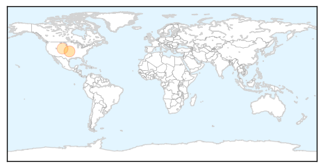
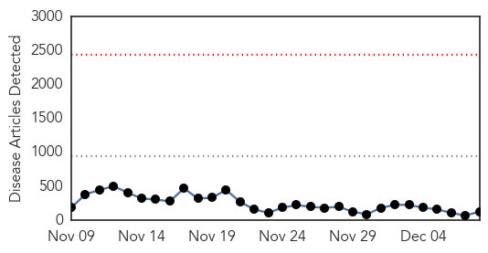
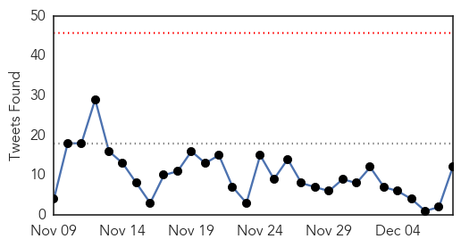
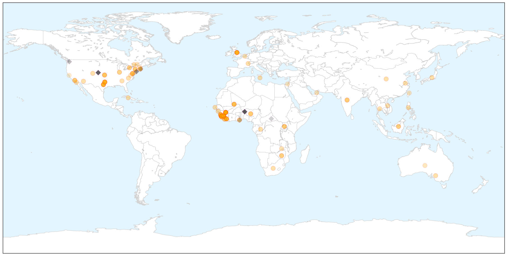

Swine Flu
30-Day Web Trend
2 alerts, 0 warnings

30-Day Twitter Trend
2 alerts, 0 warnings

Article Locations
Article Confidences

Top Articles:
Top Tweets:
-
No tweets found for Dec 08, 2014
Ebola
30-Day Web Trend
0 alerts, 0 warnings

30-Day Twitter Trend
0 alerts, 0 warnings

Article Locations

X

Article Confidences

Top Articles:
- 1.000
- Ebola: Have we turned the corner?
- 1.000
- In Ebola outbreak, bad data adds another problem
- 1.000
- U.S. Ebola survivor reveals identity, says he's grateful
- 1.000
- Senegal to establish treatment centers for Ebola patients
- 1.000
- U.S. Ebola survivor reveals identity, says he's grateful
- 1.000
- Sierra Leone seeing 80-100 new Ebola cases daily
- 1.000
- Cuban doctor cured of Ebola vows to return to Africa
- 1.000
- A Very Simple Treatment For Ebola That Not Enough People Are Talking About
- 0.999
- US Ebola survivor can't remember 3 weeks
- 0.999
- Ebola claims 10th Sierra Leonean doctor
- 0.999
- With Ian Crozier's reveal, here are the 10 Ebola patients treated in U.S.
- 0.999
- Doctor cured of Ebola vows to return to Africa
- 0.999
- Cuban Ebola patient recovers after treatment in Geneva
- 0.999
- With Ian Crozier’s reveal, here are the 10 Ebola patients treated in U.S.
- 0.998
- A tenth Sierra Leonean doctor dies from Ebola
- 0.998
- Cuban ‘Ebola’ doctor vowing return to Africa
- 0.998
- Ebola: An Eyewitness Account from Sierra Leone, Dec. 7
- 0.998
- Survivors Help Improve Ebola Care
- 0.998
- EU Ebola response: medium/long term support through development cooperation
- 0.998
- UPDATE 1-WHO says Liberia wrongly added 1,000 deaths to Ebola toll
- 0.997
- SA healthcare workers join Ebola fight
- 0.997
- Doctor under recovery from Ebola reveals his identity
- 0.997
- Ebola Outbreak: 10th Sierra Leonean doctor dies
- 0.997
- Sierra Leone overtakes Liberia in number of Ebola cases -WHO
- 0.996
- Ebola: South African doctors, nurses called to fight virus in Sierra Leone
- 0.995
- Opportunity to improve health in West Africa
- 0.995
- Strike over inadequate Ebola equipment
- 0.995
- Doctors strike at main hospital in Ebola-hit Sierra Leone
- 0.995
- Sierra Leone to jail entire families in Ebola crackdown
- 0.994
- King County Man Who Developed ‘Probable’ Ebola Symptoms Tests Negative, Sent Home By Health Officials
- 0.994
- World Must Do 'Whatever It Takes' To Ensure Recovery Of Ebola-Affected Countries
- 0.993
- EU Commissioner announces new support for fighting Ebola during visit to Guinea
- 0.993
- 'I Will Finish What I Started' Cuban Doctor Cured Of Ebola Says
- 0.992
- Ebola survivor breaks his silence - World News
- 0.992
- Sierra Leone doctors strike for better Ebola care
- 0.992
- President Koroma Ponders Reasons for Ebola Calamity
- 0.991
- Webster Woman Home From Liberia After Helping with Ebola
- 0.989
- US doctor gives first interview since surviving Ebola
- 0.988
- US doctor gives first interview since surviving Ebola – BorneoPost Online
- 0.988
- Can I Be Detained For Being Ill?
- 0.987
- Zim-born Ebola survivor breaks silence
- 0.987
- Taiwan charges man who caused national disruption with Ebola lie
- 0.987
- Taiwan charges man who caused national disruption with Ebola lie
- 0.987
- Taiwan charges man who caused national disruption with Ebola lie
- 0.986
- Dallas ER doctor of Ebola victim missed his high fever
- 0.986
- Dallas Ebola patient's doctor admits missing symptoms in initial ER visit
- 0.986
- U.N. peacekeepers released from Ebola quarantine in Mali
- 0.985
- Webster Woman Under Voluntary Quarantine After Returning From
- 0.984
- North Carolina Uniquely Positioned In Ebola Fight
- 0.984
- Ghana: Text ‘Stop Ebola’ to short code 7979
Showing top 50 articles...
Top Tweets:
- 0.948
- RT: latest update by: 17800 Ebola cases in West Africa so far 7798 in SL 2283 in Guinea(both as of 6 Dec) 7719 in Liberia …
- 0.921
- . @kakape And now Sierra Leone had passed Liberia. Ebola
- 0.898
- Text "STOP EBOLA" to *7979* to make your contribution towards Kicking Ebola out of Africa AfricaAgainstEbola dgtrends GOKinteracts
- 0.808
- Text "STOP EBOLA" to *7979* to make your make your contribution towards Kicking Ebola out of Africa AfricaAgainstEbola
- 0.808
- Text "STOP EBOLA" to *7979* to make your make your contribution towards Kicking Ebola out of Africa AfricaAgainstEbola @BBHotshots
- 0.739
- RT: Health care worker who may have been exposed to Ebola in West Africa arrives at Atlanta hospital http://t.co/SAxTqcXZRW
- 0.631
- Ebola and politics in Liberia; 10th Sierra Leonean doctor dies; Ebola retreats in Kenema- today's Executive Summary http://t.co/FkoGzOaFjy
- 0.609
- RT: Before March Sierra Leone had 136 doctors. They've lost 7% of their doctors to Ebola. That's like 58460 US doctors dying in 9…
- 0.574
- RT: Good news vs Ebola: In Lofa Liberia—hardest hit county this yr—0 cases in 30+ days. Combo of treatment/safe burials/s…
- 0.540
- RT: As Ebola Rages Poor Planning Thwarts Efforts: http://t.co/MSatiEKMf0 SierraLeone ebolaoutbreak Ebola africastopebola
- 0.539
- RT: Ebolaresponse: see how & Intl Org for Migration (@IMO_News) helped a young Ebola survivor resettle in Liberia …
- 0.514
- WHO Ebola update December 8: 17145 cases 6070 deaths http://t.co/fEms8mmhon